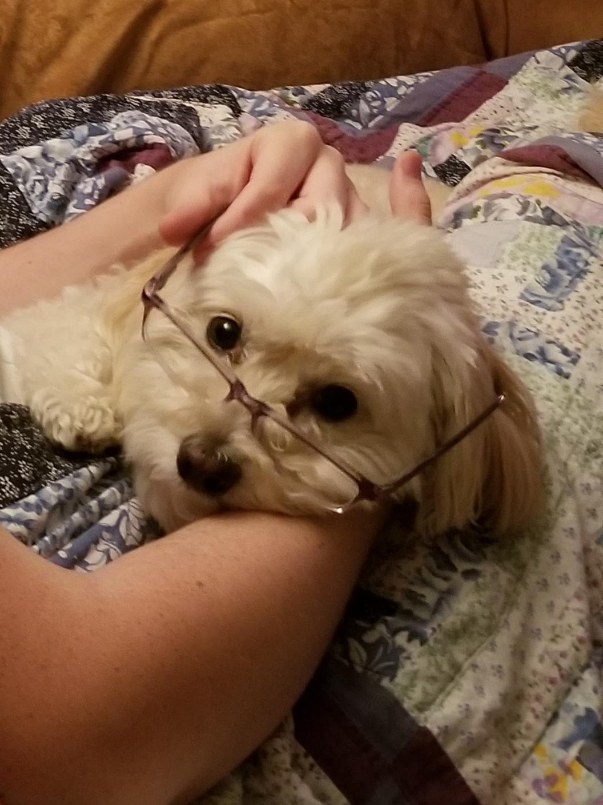

I have always hated an unsolved puzzle, something staring me in the face with the colors out of place, or the pieces misaligned. When I was first introduced to computer programming--in processing no less-- it felt like the pieces of a puzzle falling into place. Finally, Now, I get to play with data like I would a rubics cube, shaping and organizing it the way I need. I am privellaged to be able to build the tools that other developers solve need, each one solving a larger puzzle.
Family and Home

Family doesn't just raise you, you raise them. You don't just learn from them, they learn from you. Ultimately, you grow and mature together, something that never stops, even when you go your separate ways.
Entertainment
I have always loved films. Something about the visual medium helps take me out of my seat into the world of the film. A well made film can make me feel happy or sad. It can make me laugh of cry. From the first time I saw Star Wars, I have fallen in love with a films ability to pick me up and take me anywhere.
Community
I have been lucky. Living with multiple other people is not always easy, but I have been blessed to be living with good friends. We cook together every Friday and Saturday. We play the same games together. We talk about our classes together. But most importantly, we slay dragons in our living room together.
School
My favrite classes at school were the ones where I was treated as a mature person. Even when I was younger, I hated being talked down to. My 8th Grade Algebra class, my AP European History class, and my Political Theory of Game of Thrones Class in College are some of my most memorable classes, because I felt more like a peer than a subordinate. Beyond the subjects I was supposed to learn, the combination of mature dsicourse and strong critisism taught me confidence and respect. Comign out of my college experience, and going into my career, these skills are by far the most important.